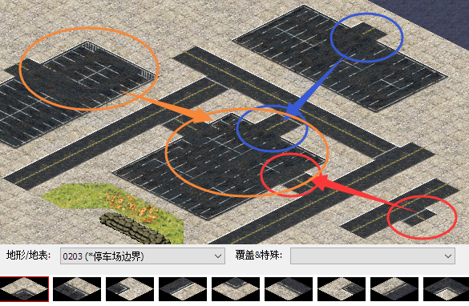
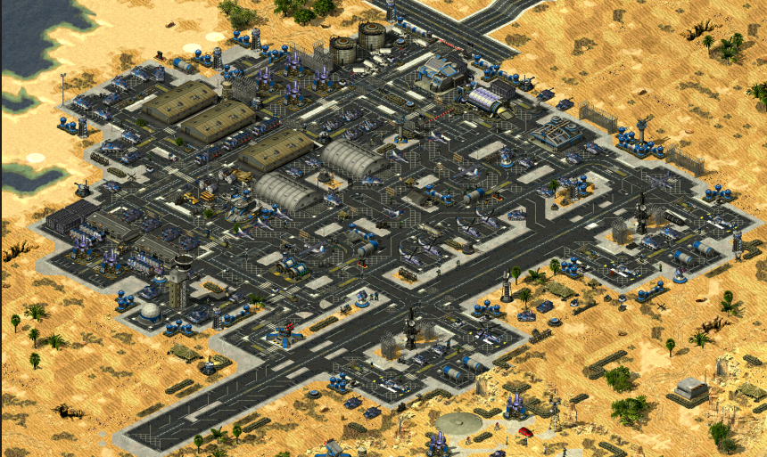
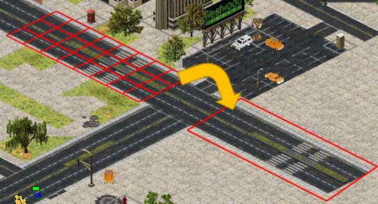
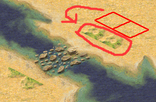
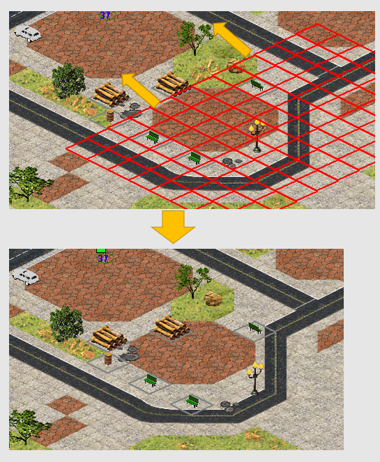
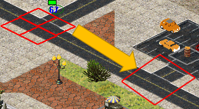

复制粘贴地形的几种运用
介绍
复制粘贴地形是我们提高作图效率的好方法，通过它，我们可以快速铺设地表，或是发明许多“新地形”，实现很多地形块的兼容。

按Ctrl+C开始复制，根据地编左下角提示完成复制，按Ctrl+V粘贴。
接下来，我们将通过一些例子来了解他的用途。
例子
- 魔改停车场

如果引入更多新的地形（网格线等），就可以做出更复杂的效果

- 快速铺设相同地形（如公路和水泥悬崖）

- 修复碎石水路bug

- 整块地形的移动
你可以这样微调区域，或者复制出多个区域。

- 合成地图、拯救坏图的地形

先记下出错地图的地图大小和类型，再编辑→复制整张地图，然后新建一份同样大小和类型的地图，再编辑→居中粘贴，(^o^)/大功告成！如果你会文本方式打开地图可能可以挽回更多东西 为何不选择【导入一张已存在的地图或BMP图片】？因为很多坏图这样之后仍然出错，而且导入的话连单位的关联信息以及内置ini都导入了，不可控
- 快速得到某个地块（补角、公路路口、石头）
画地图时，如果你突然又想用到某个地块，但又懒得重新翻找，那么你可以复制一份已经摆好的。

本篇简单的教程到此结束。
作者：轻稚
文字编写时间：2021-2-28